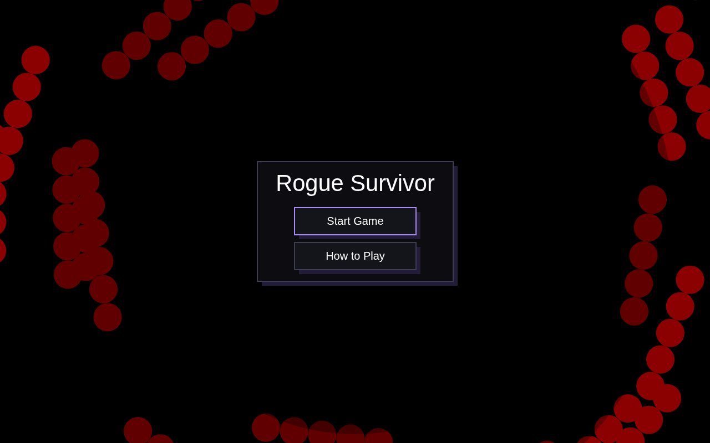
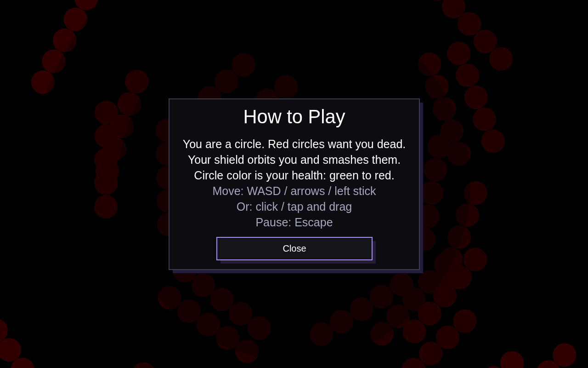
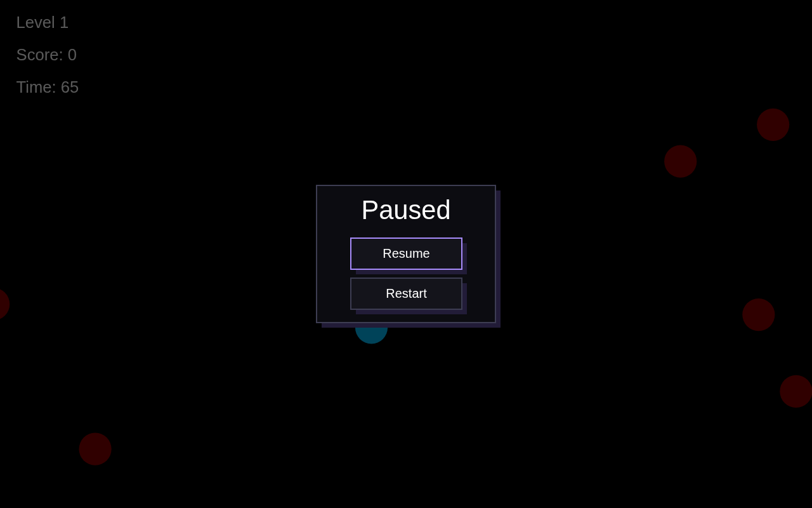
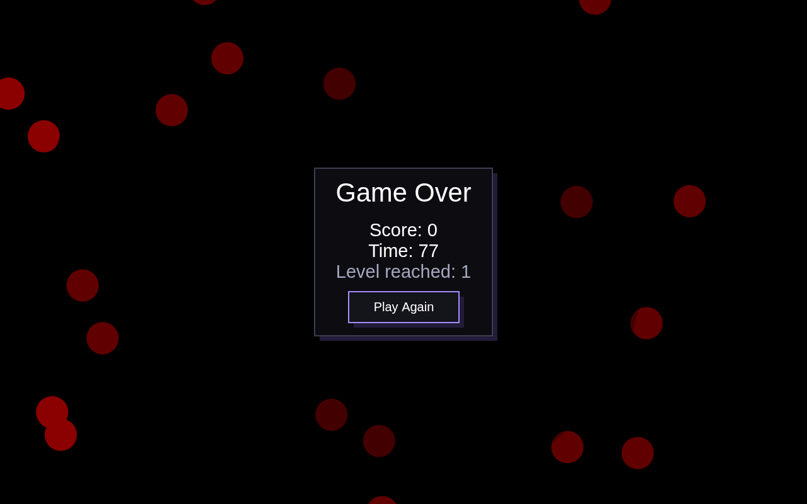

Week 1 was the AI cleanup. This week the game got a real UI: SurvivorButton, SurvivorContainer, SurvivorModal, and a focus manager for keyboard navigation. Plain boxes, no cropped corners, hard offset shadows like this site. The playable build is up top.
The week 2 build, frozen in time. Tab through the menus, open How to Play, pause mid-run. Same game underneath.
Click the game once so it captures your keyboard. Tab / arrows move focus, Enter activates, Escape backs out.
Everything lives in survivor-ui.js, drawn with the same Canvas 2D the game uses. No DOM, no framework.
SurvivorButtonA plain box with a hard offset shadow. Five states: default, hovered, focused, pressed, disabled. Pressed buttons shift down-right and their shadow shrinks, like being pushed in. Focus gets the purple border, the keyboard-focus indicator.
// Pressed buttons shift down-right, shadow shrinks: pushed in.
canvasContext.fillStyle = t.shadow
if (pressed) canvasContext.fillRect(x + 2, y + 2, w, h)
else canvasContext.fillRect(x + s, y + s, w, h) // s = scaled 6pxSurvivorContainerA panel with an optional title. Content draws through a callback that receives the padded content bounds, so callers never do box math by hand.
this.container.draw((content) => {
// content: { x, y, width, height } inside the padding
this.buttons.forEach((b) => b.draw())
})SurvivorModalDim backdrop, centered container, body lines, button stack. Opening registers the modal's buttons and traps focus inside; closing unregisters them and restores whatever was focused before.
open(focusManager) {
focusManager.registerAll(this.buttons)
focusManager.enterModalMode(this.buttons, 0) // trap
this.visible = true
}
close() {
this.buttons.forEach((b) => this.focusManager.unregister(b.id))
this.focusManager.exitModalMode() // restore focus
this.visible = false
}SurvivorFocusManagerPorted from Classic Scoundrel's FocusManager: a registry of focusables, Tab and arrow cycling with wraparound, Enter / Space activation, disabled skipping, modal trapping. Gamepads get the same treatment: d-pad moves focus, A activates, B is Escape.
handleKeyDown(event) {
if (event.key === 'Tab') { this.focusNext(); return true }
if (event.key === 'ArrowDown') { this.focusNext(); return true }
if (event.key === 'Enter' && !event.repeat) {
this.getCurrentFocus()?.activate()
return true
}
return false // unhandled: the game's own keys run
}The design decision worth calling out. My first pass mixed game-scaled fonts with fixed 440px panels. On an ultrawide monitor the title spilled right out of its box. Classic Scoundrel solves this with Dymensions: lay out UI in a virtual resolution, map it onto the canvas with a single scale. I did the same with the game's own scale: every menu length is a fraction of gameSize, and panels measure their own text with measureText to size themselves. Zero fixed pixels, on phones and ultrawides alike.
SurvivorDimensionsEvery value is a fraction of gameSize, the same unit the game world is drawn in. Menus and game can never drift apart.
const SurvivorDimensions = {
fontBase: 0.02, // the game's own base font fraction
buttonHMul: 1.9, // button height = fontBase * 1.9
shadow: 0.006, // hard offset shadow, like the site
// ...no fixed-pixel widths anywhere.
}
const fitPanelWidth = ({ title, titlePx, lines, linePx,
buttonLabels, labelPx }) => {
let need = 0
if (title) need = Math.max(need, measureTextWidth(title, titlePx))
lines.forEach((l) => need = Math.max(need, measureTextWidth(l, linePx)))
buttonLabels.forEach((l) =>
need = Math.max(need, measureTextWidth(l, labelPx) / 0.62))
return clamp(need + padding, minW, maxW)
}Start menu, How to Play modal, pause panel, game over panel. All screenshots from the real build.



